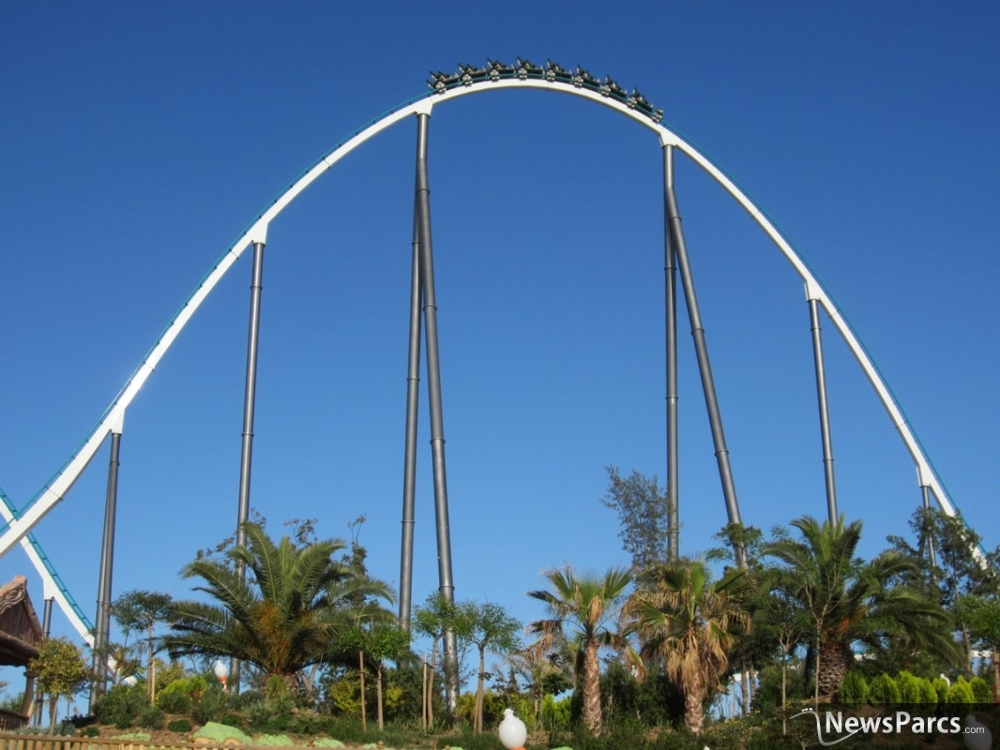
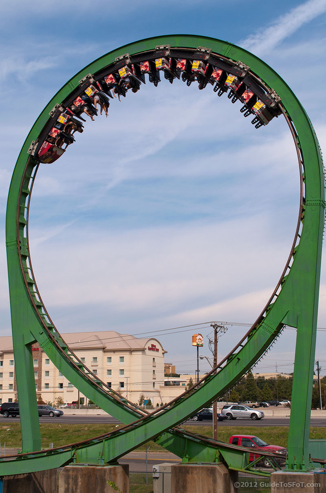
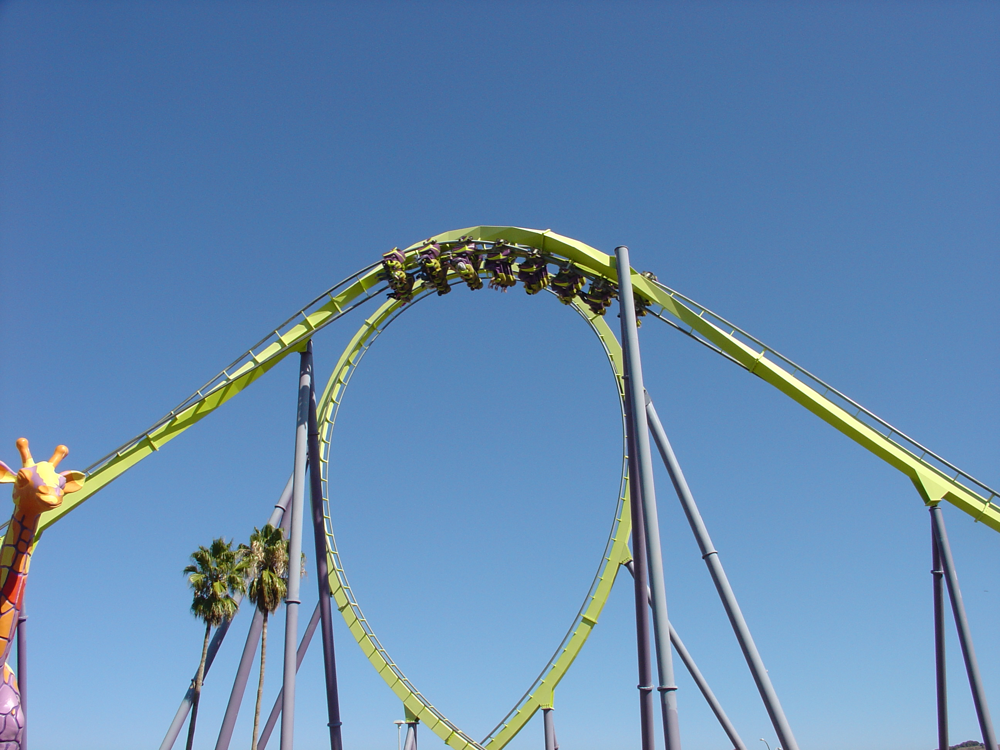
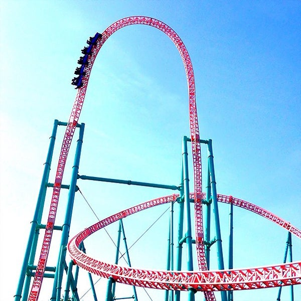
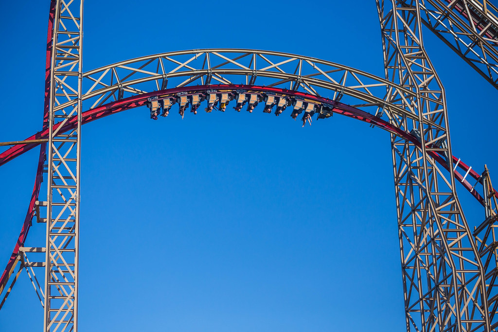
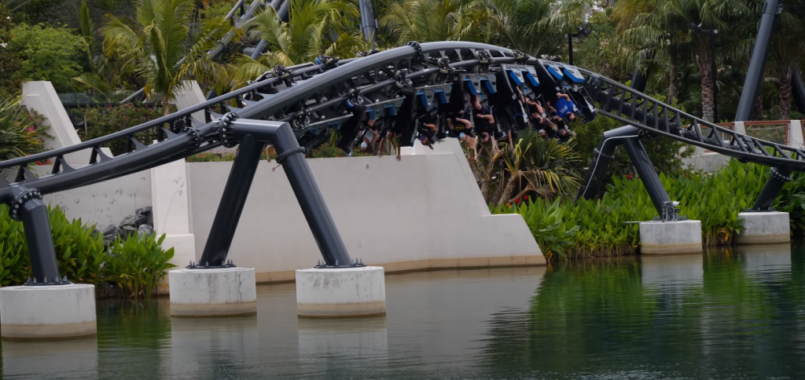
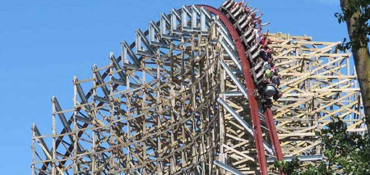

Elements are specific moments on the ride that exert various forces on your body. Weather that's floater airtime, ejector airtime, G force, lateral force, or a mix of multiple. There are many different types of elements that all feel different from one another. There are airtime hills, inversions, drops, turns, and many others. New elements have evolved throughout the years to provide new and different experiences. This site will teach you about lots of different elements that you can feel on roller coasters.
Camelback
A camelback is a large airtime hill that is streight and without any banking. They are found on many different coasters such as B&M hypers, B&M gigas, RMC Hybrids, Intamin prefabs, and many more. They are a very common and basic element. But they do tend to give great sustained airtime, and are always exilant elements.
Vertical Loop
Vertical loops are the most simple form of inversion. They are what most people think of when they think of a roller coaster inversion. They usually give some solid positive Gs and are overall fun elements. They have been featured on many different coasters throughout the years. Manufacturers like Arrow Dynamics and Schwarzkopf started making these in the 1970s and 80s, but both of these companies are now defunct. B&M is the prominent manufacturer that still makes vertical loops today.
Zero G Roll
Zero G rolls are exactly what they sound like they are. These are 360 degree rolls that go up at the start, and down at the end. They are rolls that are shaped like airtime hills. Zero G rolls are very fun elemets. They are an inversion with whipy lateral force, while also providing a nice sensation of floater airtime. They have become very popular amongst manufacturers such as B&M and RMC.
Top Hat
A top hat is an element that is primarily found on launch coasters. It starts by going up vertically, and then goes straight down at a vertical angle. The steep drop results in you getting a good amount of strong airtime. They have been made by many different manufacturers such as Intamin, Premiere Rides, S&S, and many others. These are great elements, and although they may be rather simple and relatively common, they are still very enjoyable and fun to experience.
Zero G Stall
A zero G stall is an inversion that first twists you 180 degrees so you are upside down. It then stays like that for a couple of seconds before turning you back out so that you are right side up again. It is shaped like an airtime hill, so you get a nice sensation of floater airtime, as well as some great sustained hang time because it holds you upside down for so long. It was first introduced by RMC on the coaster “Goliath'' in 2014, and they still use it on their newer rides such as “Zadra” (pictured above). It is still found most commonly on RMCs, but a few other manufacturers have used it on their rides, such as Intamin and S&S. This shows just how influential RMC is. Their new ideas, such as this, have influenced other manufacturers to use RMC’s elements. Overall Zero G stalls are fantastic elements that everyone tends to love.
Heartline Roll
A heartline roll is a 360 degree roll where the train goes through it at a very high speed. It goes straight, and does not go up or down. They are very whippy and intense elements that are typically low to the ground. They give strong laterals as well as some airtime. They are not found on very many coasters, but intamin has made some such as the one on Velocicoaster. These are one of the best and most extreme elements that people say great things about.
Outerbanked Airtime Hill
Outerbanked airtime hills refer to an airtime hill that turns to the left or right, and is banked outward from the way that it is turning. This results in even more airtime than a typical hill. It also makes the ride more interesting and less repetitive, when there is a nice mix of straight airtime hills, some that bank to the right, and some that bank to the left. This makes for a better and more well rounded coaster. They are most common on RMC coasters, and a few other companies have built them as well. They are terrific elements that are consistently praised among coaster enthusiasts.